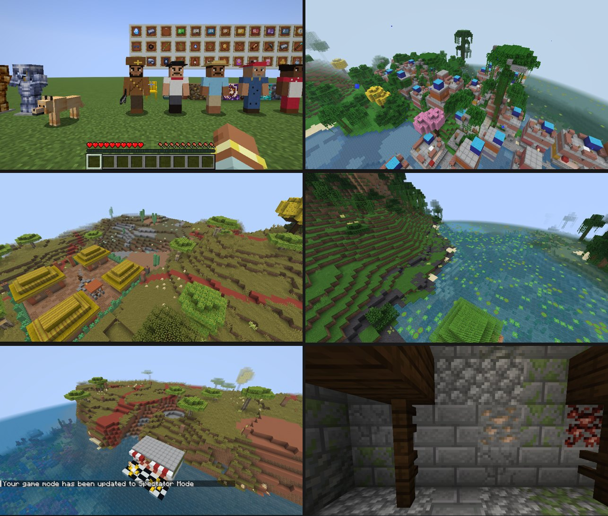

Recursos
Confira os recursos
[Print do recurso 1]
[Print do recurso 2]
02
[Nome do recurso 2]
Descrição curta sobre o segundo recurso que o mod adiciona ao jogo.
Ver no guia →
[Print do recurso 3]
03
[Nome do recurso 3]
Descrição curta sobre o terceiro recurso que o mod adiciona ao jogo.
Ver no guia →GALERIA
Capturas de Tela
Veja um pouco do visual e das novidades do Brasiltopia dentro do Minecraft.
[Screenshot 1 - Amazônia]
Floresta Amazônica com árvores gigantes
[Screenshot 2 - Fauna]
Capivaras e araras pelo bioma
[Screenshot 3 - Culinária]
Novas comidas e bancada de culinária
[Screenshot 4 - Minérios]
Cavernas com novos minerais brasileiros
GUIA EM PORTUGUÊS
Aprenda a jogar com o BRASILTOPIA
Da instalação ao objetivo final do mod: tutoriais, receitas e progressão.
NOVIDADES
O que mudou
[Título da atualização]
Adicionados novos biomas da Caatinga, correção na geração de estruturas e novos sons para os animais nativos.
[Título da atualização]
Melhorias de desempenho no Fabric 1.21.x, novas receitas de culinária e balanceamento dos minérios raros.
DOWNLOAD
Baixe o BRASILTOPIA
Escolha a versão do Minecraft e o loader que você usa.
- Requer Minecraft [1.21.x]
- [Fabric / NeoForge] instalado
- [Fabric API] como dependência